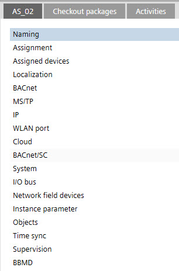
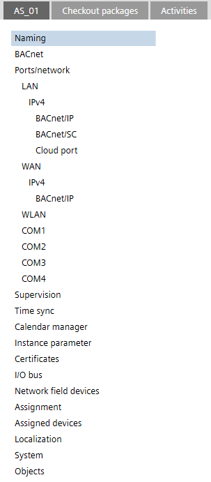

Details pane
Each task may contain individual sections in the Details pane. The sections are separated by tabs in the Details pane title bar. The default values found in the Details pane are derived from the Settings component.
Settings
New Details pane structure
As of ABT Site version 6.0, the Details pane is restructured for devices as of version 1.6. Devices that have an older version used are still displayed in the old structure. Check the Device version number in the System tab.

The description in the online help and workflows supports the new structure only.
Old structure (device version ≤ 1.5) | New structure (device version ≥ 1.6) |
|---|---|
 |  |